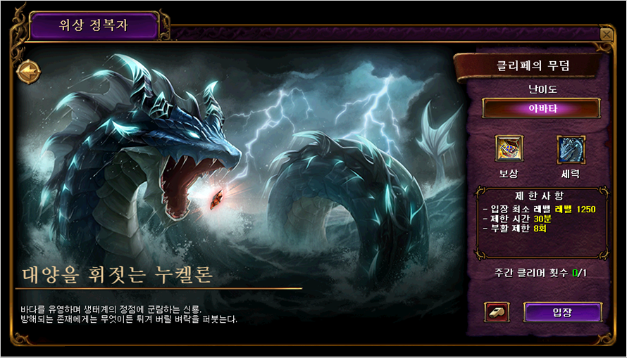
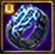
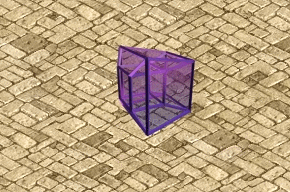

メニュー
2026/04/29 韓国アプデ ヌケロン
[重要！] 韓国公式の情報を基にしています。
誤訳や韓国独自仕様の可能性もありますので、予めご了承下さい。

新規位相征服者「ヌケロン」を紹介します。
1250レベル以上から入場可能な新規位相征服者「ヌケロン」と、登場フィールド「クリペの墓」が追加されます。
海を揺るがすヌケロン
地下界大使の居所（漆黒の城 306,283）にいる「ケルトール」または「イケル」NPCと会話し、
「異界の神獣」クエストを完了すると入場できます。

位相征服者ストーリー
- 「ヌケロン」は本来、異界の海に生息していた存在です。フランデルの海域「クリペの墓」に大量に集まった赤い宝石のオーラに導かれ、次元を越えて現れました。
- 明確な目的意識や勢力は持たず、長い年月で積み重ねた野生の知恵はありますが、知性体というより神獣に近い存在です。
- 次元移動や次元分割という位相征服者固有の能力と、圧倒的に巨大な体躯を持つため、位相征服者に分類されます。
- 赤い宝石の正体や活用法を知っているわけではありませんが、この巨大な怪獣が活動するだけでも、シュトラセラトとブリッジヘッドを行き来する船舶に深刻な被害を与える可能性があります。
- 赤い宝石の影響を受けた場合の危険性を予測しきれないため、冒険家協会は「ヌケロン」を討伐対象に指定しています。

1. 「クリペの墓」入場基準および条件
- 入場基準: 1250レベル
- 難易度: アバター
- 入場人数: 1～4人
- 入場回数: 週1回、クリア基準で1回入場可能
- 制限時間: 30分
- 復活制限: 8回
- 不死鳥オプション
注意事項
- 難易度は「アスペクト」→「アバター」→「オリジン」の順に分かれており、現在「ヌケロン」は「アバター」等級のみ存在します。
- ※エルシュカと同程度の難易度とされています
- 毎週月曜日0時に入場可能回数が初期化されます。
- 入場回数は「クリア」基準で差し引かれます。
- メインクエスト2 チャプター3 パート5-1「変身」と、チャプター4 パート10-3「変わらない席」の進行状況によって、入場のために会話するNPCが異なります。
2. クリペの墓 情報
- クリペの墓へ入場後、待機エリア内の「船」をクリックすると、ヌケロンがいる戦闘フィールドへ移動できます。
- クリペの墓では、一部能力値を無効化するデバフが適用されます。
例: 命中しやすい効果の低減、命中しにくい効果の低減、ソウルガード使用不可、被ダメージベースの体力吸収不可、最大CP維持効果使用不可
3. 「ヌケロン」報酬情報
「ヌケロン」クリア時、確率に応じて「サンダートキシン」または「775～1250 ULT」アイテムを獲得できます。
| アイテム | 装備部位 / レベル | ユニーク情報 | アイテム説明 |
|---|---|---|---|
 サンダートキシン |
指輪 レベル 1500 |
- 物理攻撃成功時、ダメージの5%で風属性攻撃 （重複時、高い数値の効果1つのみ適用） - 魔法攻撃成功時、光属性ダメージ 1～443 追加 （重複時、高い数値の効果1つのみ適用） - 感電が付与されている敵にダメージを与える時、最終ダメージ3%増加 |
別世界の神竜が残した雷の力を封じ込めた指輪。 感電した敵を攻撃すると、その電流に乗ってまるで毒のように敵へ染み込み、致命的なダメージを与える。 |
「ヌケロン」初クリア時、名誉称号エフェクト「位相探索者」を獲得できます。

＊他の位相征服者を先にクリアし、すでに称号エフェクトを保有している場合は追加支給されません。
[引用元] 韓国公式ページ